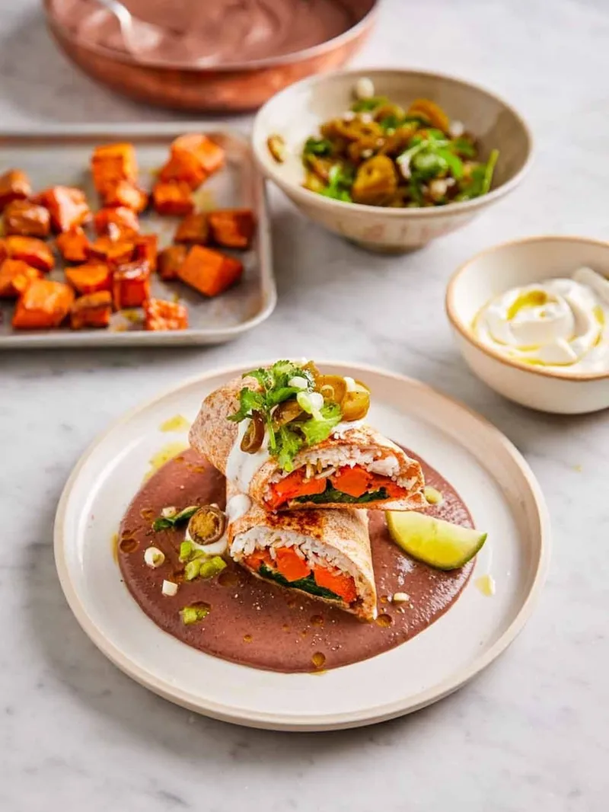

Description
Packed with beautiful flavours, this vegan burrito comes with an incredible black bean sauce for optimum dunkage.
Hit it up with some vegan yoghurt and jalapeño pickle for the perfect finish. Messy, but oh so good! ”
Ingridients
- 2 medium sweet potatoes , (600g)
- olive oil
- 2 cloves of garlic
- ½ a teaspoon of sweet smoked paprika
- ½ a teaspoon of ground cumin
- 1 x 400 g tin of black beans
- 150 g long grain rice
- 200 g spinach
- 6 spring onions
- 100 g sliced pickled jalapeños
- ½ a bunch of fresh coriander , (15g)
- 4 wholemeal tortillas
- 4 tablespoons diary-free yoghurt
- 1-2 limes